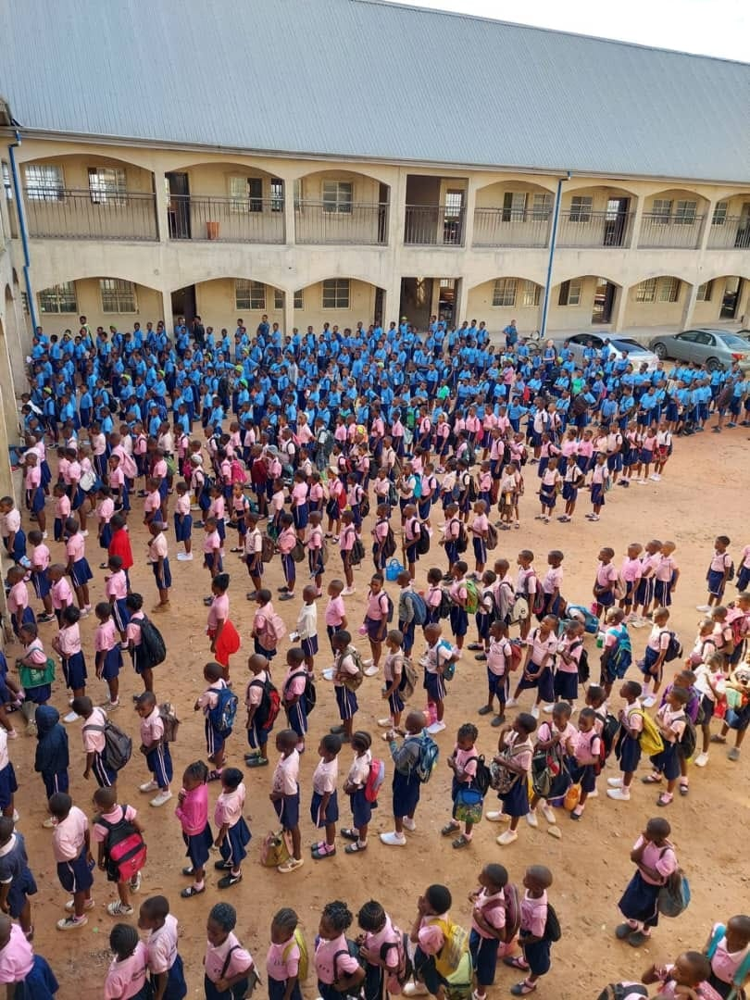

Our Primary Education programme lays the essential foundation every child needs — strong literacy, numeracy, and the social confidence to thrive throughout their academic journey and beyond.
What Makes Our Primary Programme Special
- Small class sizes for personalised attention
- Experienced, certified teachers
- Interactive, play-based learning methods
- Strong literacy and numeracy foundations
- Character development and social skills
- Safe and nurturing classroom environment
Subjects Covered
- English Language & Literature
- Mathematics
- Basic Science
- Social Studies
- Christian Religious Studies
- Creative Arts
At a Glance
P1–P6Classes Offered
25Max Class Size
100%Qualified Teachers
15+Years of Excellence
Gallery



Ready to enrol your child in our Primary Education programme?
Contact Admissions